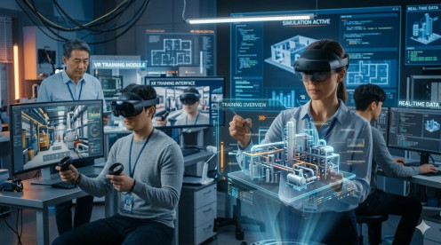
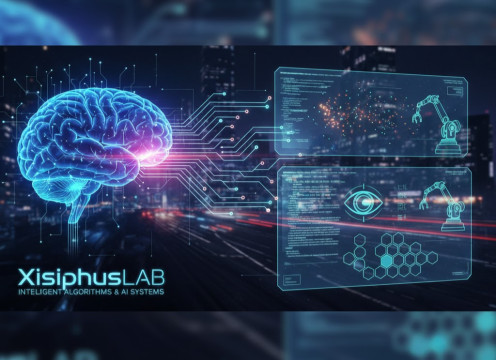
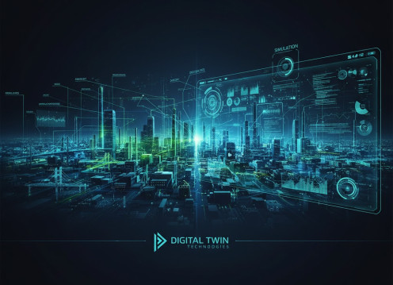

XR Development
We develop immersive applications using Virtual Reality, Augmented Reality, and Mixed Reality technologies. Our XR systems enable training, visualization, and simulation for complex environments.
XisiphusLAB explores emerging technologies that bridge the physical and digital worlds.
Our research focuses on immersive computing, intelligent systems, and digital simulations.

We develop immersive applications using Virtual Reality, Augmented Reality, and Mixed Reality technologies. Our XR systems enable training, visualization, and simulation for complex environments.

XisiphusLAB develops intelligent algorithms and AI-driven systems that enhance perception, decision-making, and automation. Our work includes machine learning, data analysis, and intelligent interfaces.

We create digital replicas of real-world environments to simulate, monitor, and analyze complex systems. Digital Twin technologies enable predictive insights and smarter operational strategies.
XisiphusLAB is a technology research initiative focused on the convergence of immersive computing and intelligent systems. Our goal is to explore innovative approaches that combine XR technologies, Artificial Intelligence, and Digital Twin platforms to solve real-world challenges. We believe that the future of computing lies in the seamless integration of physical and digital environments.
We welcome collaboration opportunities, research partnerships, and technology discussions.